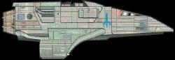

Bajoriani - Astronavi varie |
| [Senza Nome] (scout) Comandata dal Capitano Tahna Los. | Past Prologue |
| [Senza Nome] Nave trasporto. | Battle Lines |
| [Senza Nome] | In The Hands of The Prophets |
| [Senza Nome] Vascello d'assalto. | The Circle |
| [Senza Nome] Vascello d'assalto distrutto da una navetta sub-impulso. | The Circle, The Siege |
| [Senza Nome] Navetta sub-impulso, distrutta durante l'atterraggio di emergenza su Bajor. | The Siege |
| [Senza Nome] Intercettore. | Sanctuary |
| [Senza Nome] Nave trasporto. | Shadowplay |
| [Senza Nome] Nave trasporto. | The Collaborator |
| [Senza Nome] Nave trasporto. | Defiant |
| [Senza Nome] Nave trasporto. | Life Support |
| [Senza Nome] Vela solare distrutta in un atterraggio di emergenza su Cardassia. | Explorers |
| [Senza Nome] Vela solare comandata da Benjamin Sisko. | Explorers |